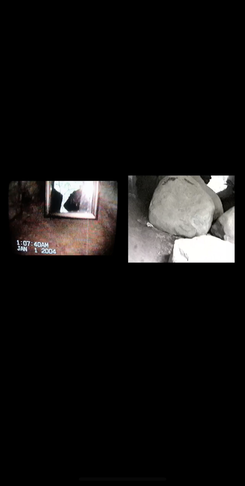
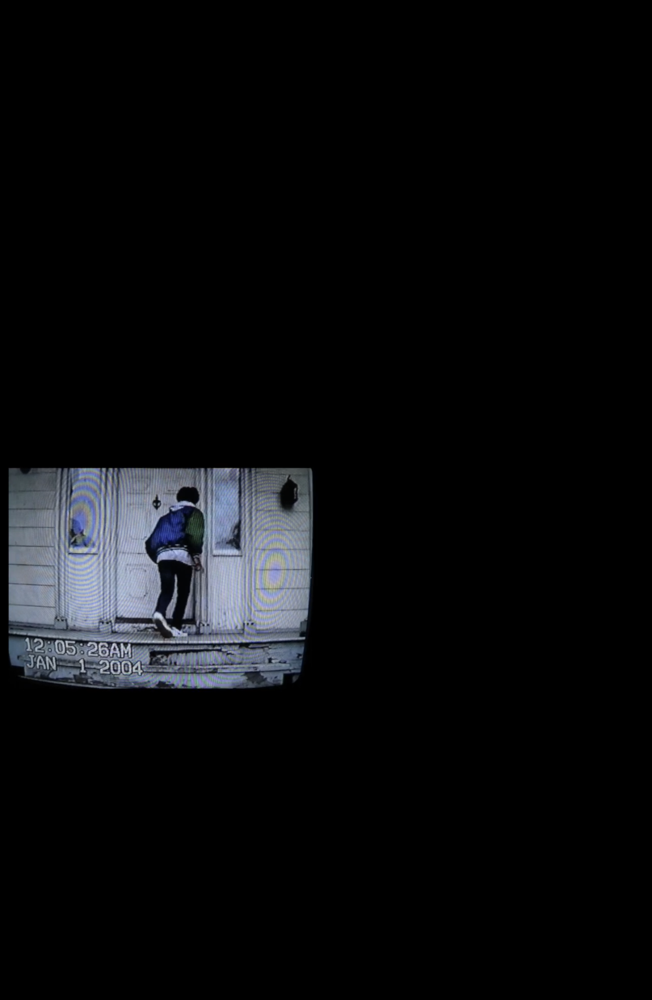
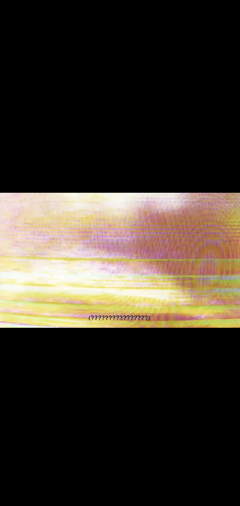
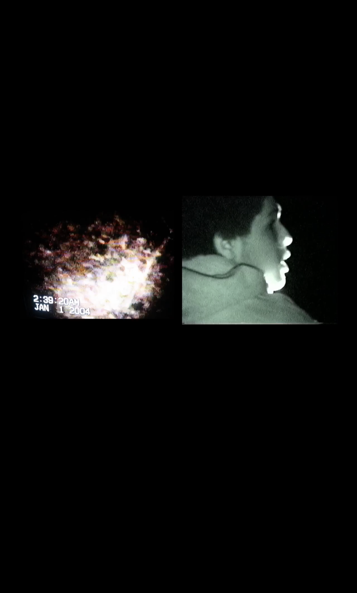
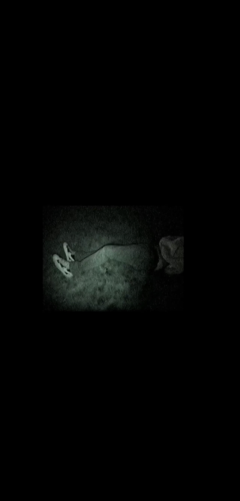
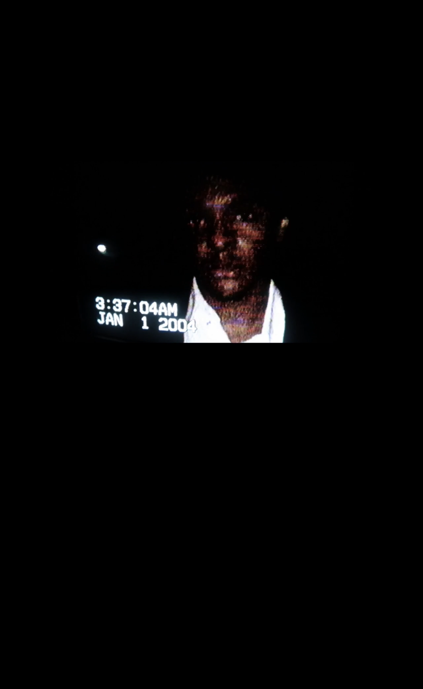

The Teen sets off to track down the elusive Chappy spectre in the woods (location unknown). He reaches a tunnel with a mirror resting against the wall inside it. Just as he crosses over to inspect said mirror the SC (Stalker Camera) begins recording him, closely following behind. The Teen steps to the mirror and is instantly attacked by the SC. He runs off into the tunnel and the footage cuts.

Now far off into the woods The Teen continues his hunt, unaware that he is still being followed. The SC pings around from spot to spot until The Teen finally notices and once again runs away. Deeper into the forest he goes as he reaches Chappy’s Cabin. Looking inside the windows to see if anyone, or thing, is inside. The mirror reappears and The Teen quickly runs to it, once again oblivious to the being creeping up behind him. The Teen stands in front of the mirror and instead of his own reflection, sees Chappy, as him. Chappy takes a long drag from his cigarette and points behind The Teen. The Teen quickly swivels around only to be attacked by presumably Chappy (camera shows the same pants and shoes as the spirit). His camera falls briefly, which he quickly picks up. Sprinting away once again.

There is no evidence to support what this clip may or may not be. However people suspect it to be saying something.

Brandishing a black eye The Teen continues to stumble through the pitch black woods, as night has now fallen. Panicked, The Teen runs around the woods, constantly bumping into the SC who continues his pursuit. But much more aggressively, constantly teleporting around his target. The Teen stops, believing that the SC has lost him, only to be ambushed and knocked unconscious.

The Teen is dragged deeper into the heart of the woods.

Waking up in a field with his personal camera already filming him, The Teen spots a suitcase placed in front of him. The words “Hurt People Hurt People” written on it. The Teen opens the suitcase to find Chappy’s suit inside of it, as well as a handheld mirror with “Chappy” written on it (this is thought to be Chappies PERSONAL mirror). The Teen holds the mirror up to his face, and once he lowers it Chappy appears before him, somehow also having a black eye. He gives The Teen a thumbs up and vanishes. The Teen refocusing his attention on the mirror, throws it on the ground and destroys it. Finally placing his camera inside of the suitcase and shutting it.